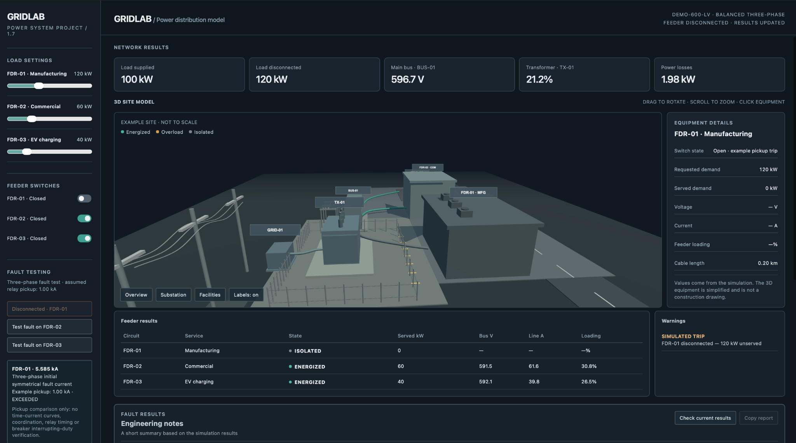
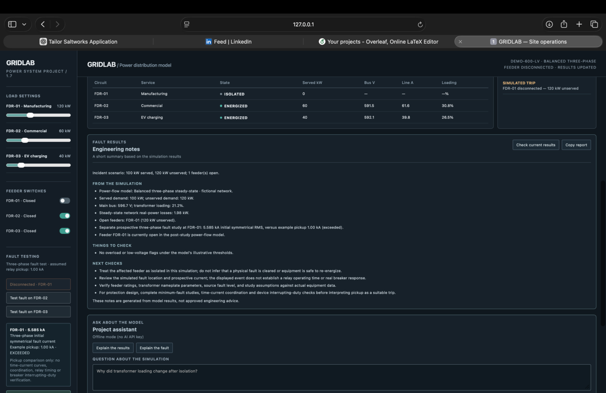

Supply & transformer
25 kV/600 V transformer model feeding the simulated low-voltage main bus.
A Python/pandapower digital model of a low-voltage industrial distribution network, with load-flow analysis, feeder switching, configurable load demand and power factor, software fault scenarios, and automated isolation logic exposed through a FastAPI dashboard.

The network represents a 25 kV/600 V step-down transformer supplying a common low-voltage bus and three independently controlled manufacturing, commercial, and EV-charging feeders.
25 kV/600 V transformer model feeding the simulated low-voltage main bus.
Three switchable load feeders with independent connection and isolation states.
Variable feeder P/Q demand and power factors to investigate voltage regulation and branch loading.
Solves steady-state power flow using pandapower, including bus voltage magnitude (p.u.), active/reactive power (MW/MVAr), and line-loading percentages.
Implements simulated three-phase, line-to-line, and line-to-ground fault cases with application-level trip and feeder-isolation logic; not a relay-grade short-circuit engine.
Executes automatic state transitions, trip decisions, and isolation actions while logging the resulting network conditions.
Uses a FastAPI service and browser HMI to expose feeder switching, bus and branch measurements, status indicators, and event logs.
Supports individual feeder open/close commands and recomputation of the resulting electrical operating point.
Applies Pydantic/Pandera validation and pytest coverage to reject invalid inputs and protect network-state invariants.
Screenshots from the running application show branch status, simulated isolation decisions, bus voltage, feeder loading, and active/reactive power results.


Implemented the source transformer, LV bus, and parameterized feeder-load models used in the power-flow solver.
Developed API endpoints and a browser interface for demand inputs, switching commands, measurement telemetry, and event history.
Implemented configurable fault cases, trip-state transitions, and automatic feeder isolation in the application layer.
Developed a 12-case pytest regression suite covering nominal operation, switching, demand variation, simulated trip logic, and invalid inputs.
Scope: This is an offline power-system and automation simulation. It is not a commissioned protection relay, real-time hardware-in-the-loop platform, or independently validated short-circuit study; trip responses are implemented as model-level software logic.
The repository provides the FastAPI backend, pandapower model, browser interface, input validation, and automated test suite.